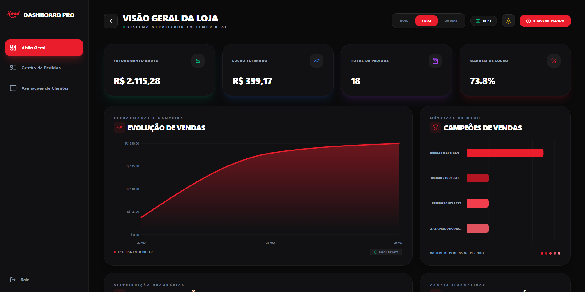
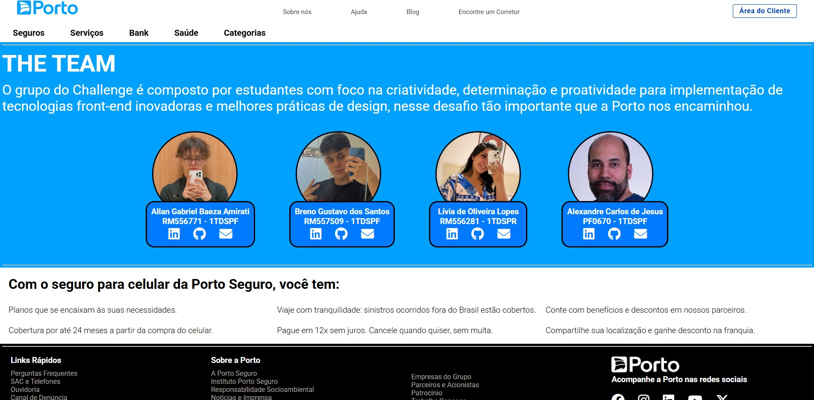
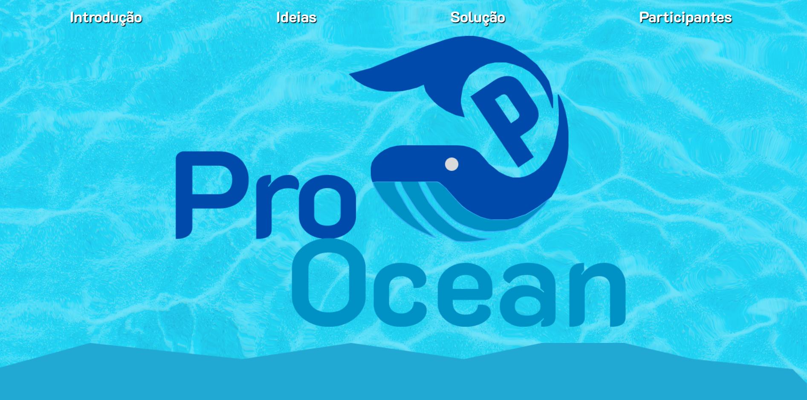
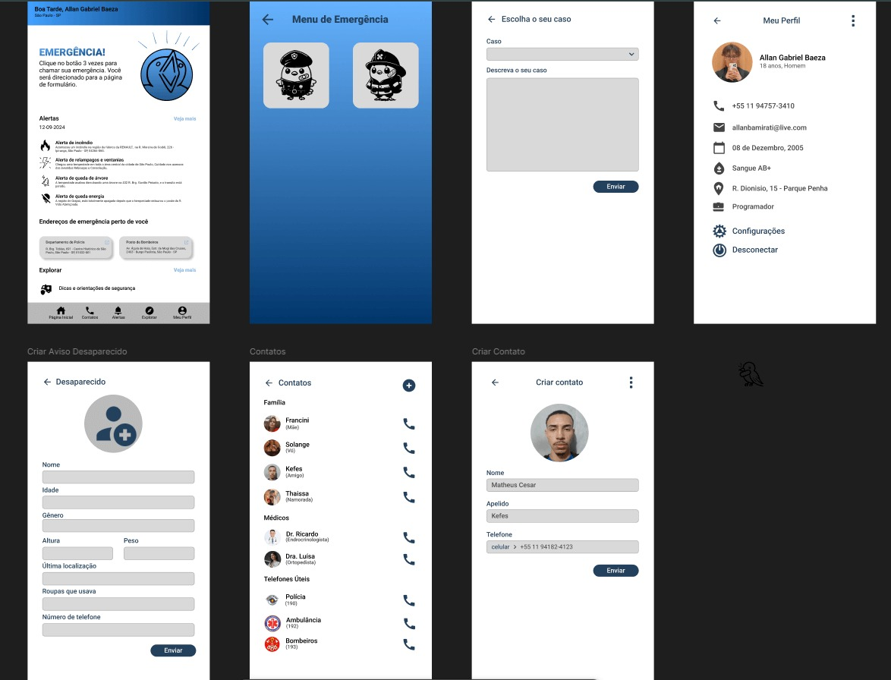

CarefulBaza (E-commerce)
Arquitetura de Back-end unificada para plataforma de dropshipping com foco em resiliência e alta disponibilidade.
Aplicações práticas e acadêmicas de arquitetura de software, construção de APIs, dados e mobile.
Arquitetura de Back-end unificada para plataforma de dropshipping com foco em resiliência e alta disponibilidade.

Pipeline de dados e integração comercial para automação de pedidos e gerenciamento de cardápios.
Repositório
Simulação de sistema de atendimento e triagem utilizando inteligência artificial e modelagem de banco de dados.
RepositórioSolução automatizada para leitura, processamento e consolidação de dados em planilhas.
Ver RepositórioPipeline de processamento e ingestão de dados para leitura otimizada de grandes arquivos CSV.
Ver Repositório
Arquitetura de sistema para monitoramento ambiental e integração de hardware focado na preservação oceânica.
Ver RepositórioAplicação focada em saúde mental com back-end em Supabase (BaaS) e interface nativa.
Ver Repositório
Concepção e desenvolvimento de sistema com alertas de emergência geolocalizados em tempo real.
Case